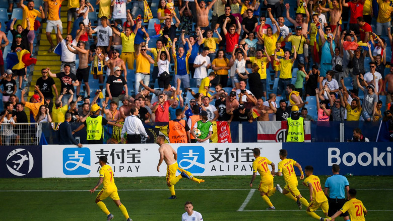

EURO 2019 U21. România a învins Anglia cu 4-2. Pas pentru calificarea în semifinala
Data publicare: 9.11.2024 23:11
Data actualizare:

Naționala de tineret a României a făcut un pas important pentru calificarea în semifinalele EURO 2019
după victoria spectaculoasă în fața Angliei: 4-2. România U21 este pe pirmul loc în grupă, cu 6 puncte.
Intrat de doar zece minute, Florinel Coman a scos un penalty transformat fără emoţii de Puşcaş. Bucuria
nebună a fost temperată rapid după super-execuţia lui Demarai Grey.
În minutul 85, englezul Tomori ne-a făcut un cadou şi Ianis Hagi a marcat pentru 2-1. Din nou nu am
reuşit să ţinem de avantaj, iar Abraham a egalat chiar la atacul următor!
Încurajaţi de opt mii de români, elevii lui Rădoi au avut din nou noroc. Portarul Henderson a scăpat în
poartă şutul lui Florinel Coman! În prelungiri, perla FCSB-ului a mai prins un şut de zile mari şi i-a
adus tineretului a doua victorie la Euro U21.
Echipe
Surpriza a lui Mirel Radoi! Selectionerul nationalei de tineret a ales pana la urma acelasi 11 ca la
partida cu Croatia! Ivan si-a pastrat astfel locul in fata lui Florinel Coman. De partea cealalta,
selectionerul Angliei a facut mai multe schimbari.
ROMANIA U21
Radu - Manea, Pascanu, Nedelcearu, Stefan - Baluta, Cicaldau - Ivan, Hagi, Man - Puscas
”Înseamnă foarte mult pentru mine să înscriu pentru echipa națională, este o mândrie incredibilă! Orice
gol aș marca, împotriva oricărei echipe este ceva spacial. Sper să marchez în continuare și să ducem
echipa cât mai sus posibil.
Puterea noastră este unitatea și foamea de rezultate, de realizări. De altfel, asta este și diferența
dintre noi și adversarii noștri. Nimeni nu are o foame mai mare de performanță ca noi”, a spus Pușcaș în
interviul postat și pe site-ul oficial al FRF.
VIDEO cu interviul integral acordat de George Pușcaș
Clasamentul grupei C
România U21 - 6p
Franța U21 - 3p
Anglia U21 - 0p
Croația U21 - 0p
Rezumat al meciului
UPDATE Min. 95: Final de meci la Cesena! România U21 se impune în fața Angliei cu 4-2.
UPDATE Min. 94: Coman vede cartonașul galben, după ce și-a scos tricoul.
UPDATE Min. 93: GOOOOOOOOLLLLLLLL ROMÂNIA! Florinel Coman este magistral! Atacantul FCSB îl execută pe
Henderson cu șut senzațional de la 18 metri și aduce victoria tricolorilor mici.
UPDATE Min. 91: Radu este din nou impecabil! Portarul nostru scoate în fața lui Abraham, care ulterior
lovește bara.
UPDATE Min. 90: Tomori vede cartonașul galben.
Detalii cheie
UPDATE Min. 89: GOOOOOOLLLLL ROMÂNIA! Ce nebunieeeeee de meci!!! Florinel Coman ne readuce în avantaj
printr-un șut minunat de la aproximativ 20 de metri.
UPDATE Min. 88: Schimbare la România U21. Iese Ianis Hagi și intră Dragomir.
UPDATE Min. 86: Gol Anglia! Abraham restabilește egalitatea cu un șut din interiorul careului de 16
metri.
UPDATE Min. 85: Gooooooollllll România! Ianis Hagi marchează un gol uriaș cu un șut de la marginea
careului de 16 metri.
UPDATE Min. 84: Radu este impecabil! Goalkeeper-ul nostru a scos excelent o lovitură de cap trimisă de
Calvert-Lewin.
UPDATE Min. 80: Gol Anglia! Gray îl învinge pe Radu cu un șut superb de la marginea careului de 16 metri.